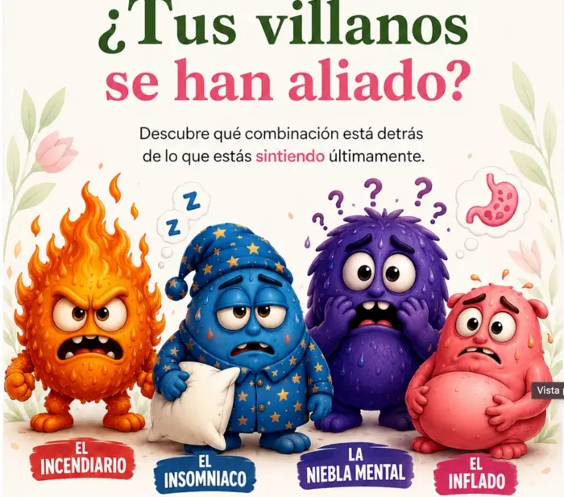
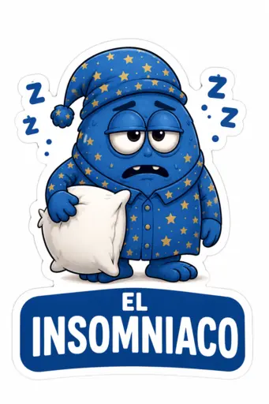
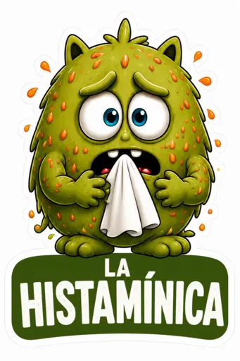

CONECTA
💌 Invitación personal
Abre conversación sin explicar todo ni intentar convencer desde el primer mensaje.
“Hola, [nombre] 🌷. Estoy participando en una iniciativa para ayudar a más mujeres a entender mejor los cambios que pueden aparecer en esta etapa. Pensé en ti y me gustaría compartirte algo que estamos haciendo. ¿Te lo puedo enviar?”
CONECTA · COMPARTE

Descubrir sus Villanos
“Tenemos una forma sencilla y hasta divertida de identificar qué cambios de esta etapa podrían estar afectándote más. Los llamamos los Villanos de la Menopausia 😈🌷. Si quieres, te comparto el test.”
COMPARTIR TEST →
MULTIPLICA
🌷 Conocer Embajadoras
No compartas directamente la Ruta. Primero comparte la propuesta.
“Por la forma en que te interesó este tema, pensé que quizá te gustaría conocer algo más. Estamos formando una comunidad de Embajadoras de Menopausia Dichosa®: mujeres que aprenden, comparten y acompañan a otras.”
COMPARTIR PROPUESTA →
CONECTA · COMPARTE

Recurso: El Insomniaco
“Si uno de los cambios que más estás sintiendo es que ya no descansas igual, quiero compartirte este recurso sobre El Insomniaco 🌙. Revísalo con calma y después me cuentas qué parte se parece más a lo que estás viviendo.”
COMPARTIR RECURSO →
CONECTA · ACOMPAÑA

Test de la Histamínica
Compártelo cuando aparezcan señales como dolor de cabeza, urticaria, congestión, palpitaciones, inflamación digestiva o reacciones después de ciertos alimentos.
“Por lo que me cuentas, quizá te ayude revisar este recurso sobre La Histamínica 🌺. Incluye un test orientativo y un diario de seguimiento para observar síntomas y posibles disparadores. No es un diagnóstico médico, pero puede ayudarte a ordenar lo que estás sintiendo.”
COMPARTIR TEST DE HISTAMINA →
PRÓXIMAMENTE
📲 WhatsApp, historias y redes
Mensajes de seguimiento, invitaciones, estados, imágenes, reels y piezas listas para compartir.
SEGUIREMOS ALIMENTANDO ESTA SECCIÓN
Regla de oro: primero conversación, después herramienta. Un enlace sin contexto rara vez construye relación.